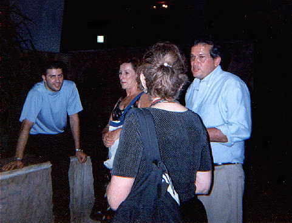
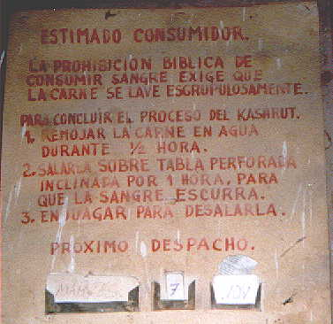
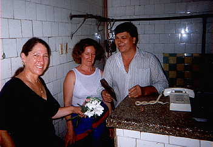
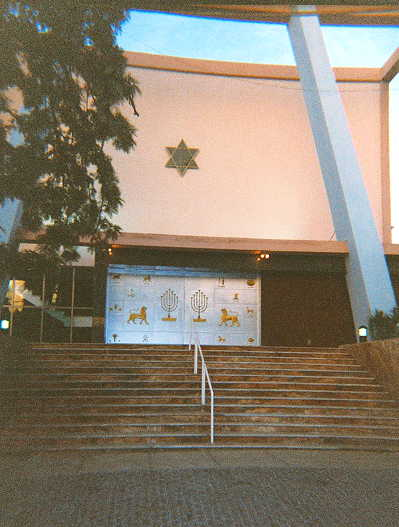
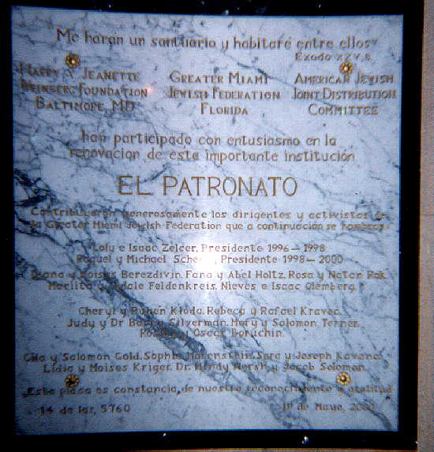

Photos by Jacqueline Davidow Page two
 Waiting for services to begin
 Rules of kashrut
 Right to left: Ray the kosher butcher, his wife, Jacqueline Davidow
 Patronato exterior
 Patronato renovation plaque
Davidow, page one